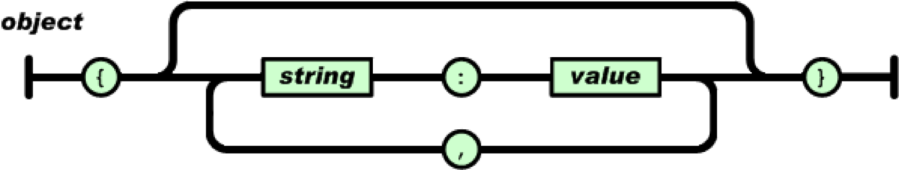
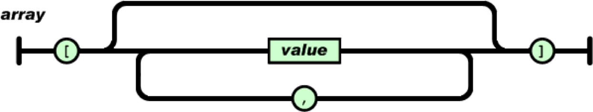
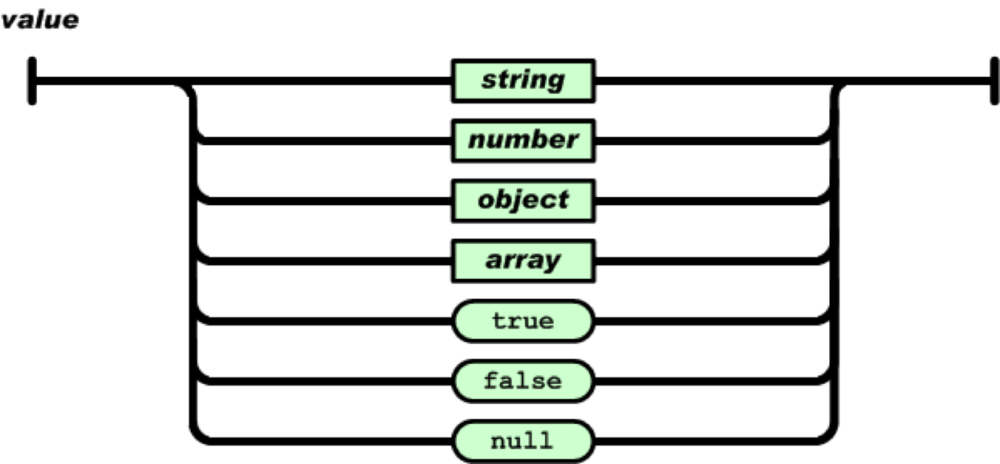

JavaScript 中的对象，和其它编程语言中的对象一样，可以比照现实生活中的对象来理解它。 JavaScript 中对象的概念可以比照着现实生活中实实在在的物体来理解。
在 JavaScript 中，一个对象可以是一个单独的拥有属性和类型的实体。拿它和一个杯子做下类比，一个杯子是一个对象，拥有属性。杯子有颜色、图案、重量等等。同样， JavaScript 对象也有属性来定义它的特征。
方法 是关联到某个对象的函数，或者简单地说，一个方法是一个值为某个函数的对象属性。定义方法就象定义普通的函数，除了它们必须被赋给对象的某个属性。
就是 JavaScript 语言预定义的对象。在 ECMAScript 标准定义，由 JavaScript 解释器/引擎提供具体实现。
指的是 JavaScript 运行环境提供的对象。一般是由浏览器厂商提供实现（目前也有独立的 JavaScript 解释器/引擎提供实现），主要分为 BOM 和 DOM。
就是由开发人员自主创建的对象。
使用对象初始化器也被称作通过字面值创建对象。通过对象初始化器创建对象的语法如下:
var obj = {
property_1: value_1, // property_# 作为一个标示符
property_2: value_2, // 标示符可以是一个数字值
// ...,
"property_n": value_n // 标示符也可以是一个字符串
}; var date = new Date();// 创建一个 Date 对象
var str = new String("this is string.");// 创建一个 String 对象
var num = new Number(100);// 创建一个 Number 对象var obj = new Object();// 创建一个自定义对象Object.create() 方法创建一个拥有指定原型和若干个指定属性的对象。语法如下:
Object.create(proto, [ propertiesObject ])参数:
通过 Object.create() 方法创建一个新对象，同时扩展自有属性:
var flyer = {
name : "A380",
speed : 1000
}
var plane = Object.create( flyer,{
capacity : {
value : 555,
writable : true,
enumerable : true
}
});Object.create() 方法的一些特殊用法:
var obj = Object.create( null );Sub.prototype = Object.create( Super.prototype );var obj = Object.create( Object.prototype );
// 等效于 var o = {}一个 JavaScript 对象有很多属性。一个对象的属性可以被解释成一个附加到对象上的变量。对象的属性和普通的 JavaScript 变量基本没什么区别，仅仅是属性属于某个对象。
var myCar = new Object();
myCar.make = "Ford";
myCar.model = "Mustang";
myCar.year = 1969;var myCar = new Object();
myCar["make"] = "Ford";
myCar["model"] = "Mustang";
myCar["year"] = 1969;var emp = { ename : 'Tom', salary : 3500 };
emp.ename = 'Tommy';// 修改属性的值
console.log(emp.ename);// 获取属性的值var emp = { ename : 'Tom', salary : 3500 };
emp[ 'ename' ] = 'Tony';// 修改属性的值
console.log(emp[ "ename" ]);// 获取属性的值JavaScript 提供了三种原生方法用于遍历或枚举对象的属性:
var emp = { ename : 'Tom', salary : 3500 };
for (var n in emp){
console.log(n, emp[n]);
}var emp = { ename : 'Tom', salary : 3500 };
var arr = Object.keys(emp);
for (var i=0;i<arr.length;i++){
console.log(arr[i],emp[arr[i]]);
}var emp = { ename : 'Tom', salary : 3500 };
var arr = Object.getOwnPropertyNames(emp);
for (var i=0;i<arr.length;i++){
console.log(arr[i],emp[arr[i]]);
}当不确定对象是否存在、对象的属性是否存在时，可以使用错误处理结构 try…catch 语句块来捕捉抛出的错误，避免程序异常终止。
//访问未声明的变量
console.log( emp );// ReferenceEerror
//访问未声明的属性
var emp = { };
console.log( emp.ename );// undefined
//访问未声明的属性的成员
console.log( emp.ename.length );// TypeError 可以使用如下四种方法检测对象中是否存在指定属性:
console.log( 'ename' in emp );console.log( emp.hasOwnProperty( 'ename' ));console.log( emp.ename === undefined );if( emp.ename ){
console.log( 'ename属性存在' );
}可以用 delete 操作符删除一个不是继承而来的属性。如下示例:
// 创建一个 myobj 对象，具有 a 和 b 属性
var myobj = new Object;
myobj.a = 5;
myobj.b = 12;
// 删除 myobj 对象的自有属性 a
delete myobj.a;定义方法就象定义普通的函数，除了它们必须被赋给对象的某个属性。如下示例:
var obj = new Object();
obj.sayMe = function(){
console.log( "this is me." );
}
var obj = {
name : "javascript",
sayMe : function(){
console.log( "this is me." );
}
}对象方法的调用类似于对象属性的调用，同样具有以下两种方式:
var obj = new Object();
obj.sayMe = function(){
console.log( "this is me." );
}
obj.sayMe();// 调用 obj 对象的 sayMe 方法var obj = {
name : "javascript",
sayMe : function(){
console.log( "this is me." );
}
}
obj[ "sayMe" ]();// 访问 obj 对象的 sayMe 方法可以用 delete 操作符删除对象的方法，如下示例:
var obj = {
name : "javascript",
sayMe : function(){
console.log( "this is me." );
}
}
delete obj.sayMe;// 这里没有 "()"值得注意的是: 删除对象的方法时，不需要小括号“()”。如果有小括号则删除失败。
JSON 全称为 JavaScript Object Notation，译为 JavaScript 对象表示法。是一种轻量级的数据交换格式。
官网地址： http://www.json.org/json-zh.html
JSON 易于开发者阅读和编写，也易于计算机解析和生成。它基于JavaScript Programming Language，Standard ECMA-262 3rd Edition - December 1999的一个子集。
JSON 采用完全独立于语言的文本格式，被 Java、C#、C++、PHP、OC 等几乎所有主流语言所支持。
JSON 作为一种轻量级的文本数据交换格式，已被广泛使用于存储和交换文本数据领域。
JSON 构建于两种语法结构:


JSON 存储数据的类型可以是字符串（string）、数值(number)、true、false、 null、对象（object）或者数组（array）。这些结构可以嵌套。

JavaScript 中使用字符串（String）来表示 JSON 的两种结构。
var jsonTxt = ' {
"ename" : "Tom",
"salary" : 3500,
"isMarried" : true
} ';var jsonTxt =' [ "Tom", "Mary", "John" ] ';值得注意的是: 字符串必须用双引号括起来。
JavaScript 提供了 JSON 对象，该对象具有两种方式:
| 方法名 | 描述 |
|---|---|
| JSON.parse() | 解析JSON字符串，可以选择改变前面解析后的值及其属性，然后返回解析的值。 |
| JSON.stringify() | 返回指定值的 JSON 字符串，可以自定义只包含某些特定的属性或替换属性值。 |
值得注意的是: IE 8 版本之前（包含 8 版本）并不支持 JSON 对象。必须下载 json2.js 或 json3.js 工具解决此问题。
将 JSON 转换为 JavaScript 具有两种方式:
var jsonTxt = ' { "x": 60, "y": 30 } ';
var jsObj = eval( "(" + jsonTxt + ")" ) ;值得注意的是:
- 根据 eval() 的严格语法要求，其接收的参数只能是 string 类型，而不能是 String 类型！
- 使用 eval() 将 JSON 字符串解析为 JavaScript 对象时，若不添加左右的小括号，会抛出 SyntaxError。
var jsonTxt = ' { "x": 60, "y": 30 } ';
var jsObj = JSON.parse( jsonTxt );利用 JavaScript 中 JSON 对象的 stringify() 方法将 JavaScript 转换为 JSON。
var jsObj = { 'x': 60, 'y': 30 } ;
console.log( typeof JSON.stringify( jsObj ) ); 本笔记的内容免费开源，任何人都可以免费学习、分享，甚至可以进行修改。但需要注明作者及来源，并且不能用于商业。
本笔记采用知识共享署名-非商业性使用-禁止演绎 4.0 国际许可协议进行许可。